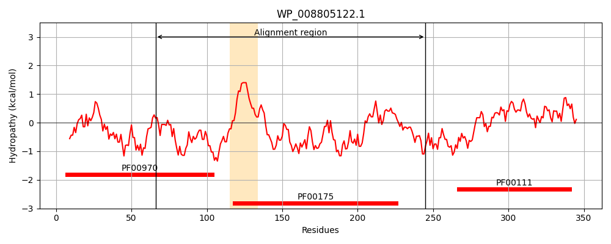
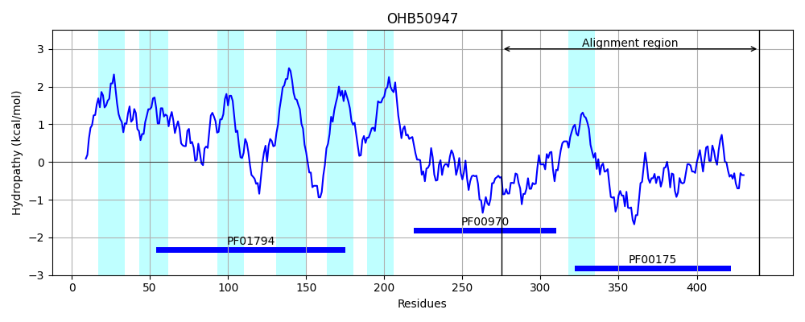
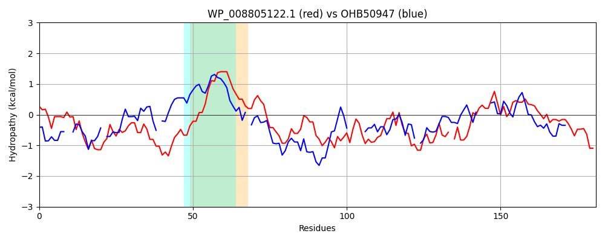

Hit Accession: OHB50947
Hit TCID: 5.B.1.2.4
Hit Description: gnl|BL_ORD_ID|7925 gnl|TC-DB|OHB50947.1|5.B.1.2.4 hypothetical protein A2Y10_08285 [Planctomycetes bacterium GWF2_41_51]
Mach Len: 181
e:0.000000
Query TMS Count : 1
Hit TMS Count: 7
TMS-Overlap Score: 0.600000
Predicted Substrates:None
BLAST Alignment:
Score: 156 , Bit scores: 64 bits, E-value: 1.6e-11, Alignment length: 181, Percentage identity: 33
Query: 66 GEISVAVKAIDGGRFSRYAQHDIQQGMELEVMVPQGHFGYQPQAERQGEYLAIAAGSGITPMMAIMSATLATEPQSRFTLIYGNRSSHSMMFRQALADLKDRYPQRLQVIHLFSQESMDSDLLQGRIDGDKLRQ-LADHLLDFSRFDEAFICGPAAMMDEAEAALRELGVAEKSIHLERFN 245
GE S+ VK+ GR ++ Q I+ + + P G F Q E + IA G GIT + LA EP L YGN+ H ++++Q L ++++ + VIH+ S E S G I D LR+ L L+++ E ICGP AM ++ E+AL V + IH E F+
Sbjct: 275 GEFSITVKS--AGRTTQNLQW-IKPDEIVYIDGPYGIFS-QTALESHRPIVMIAGGIGITAFTRLFEE-LAYEPDMEIHLFYGNQKKHEIVYKQELENVEN-----VNVIHVLSDEPQYSGET-GFITTDLLRKYLKKSLVNY----EFLICGPPAMTEKLESALLSENVPDTQIHHELFD 440 | Protein Hydropathy Plots: |
|---|
|  |  |
Pairwise Alignment-Hydropathy Plot:
|
|---|
|  |